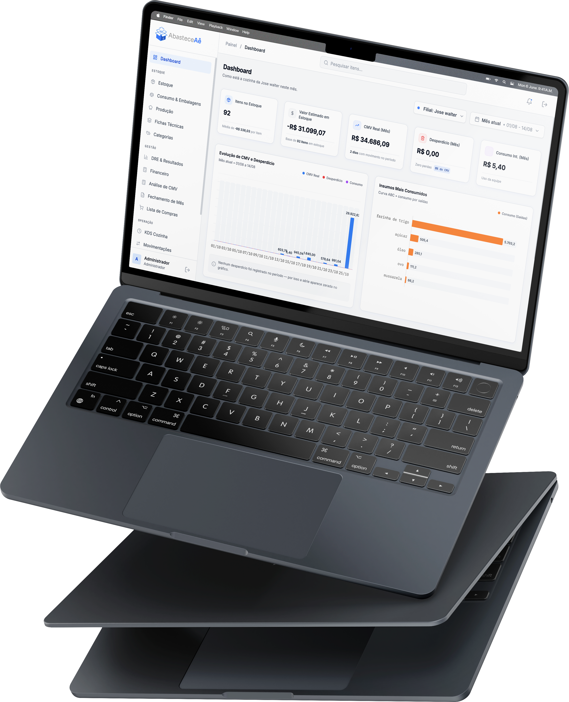
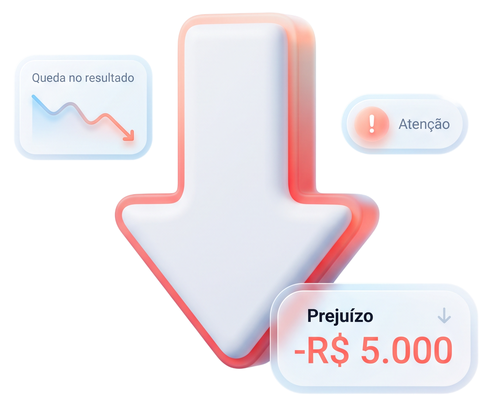
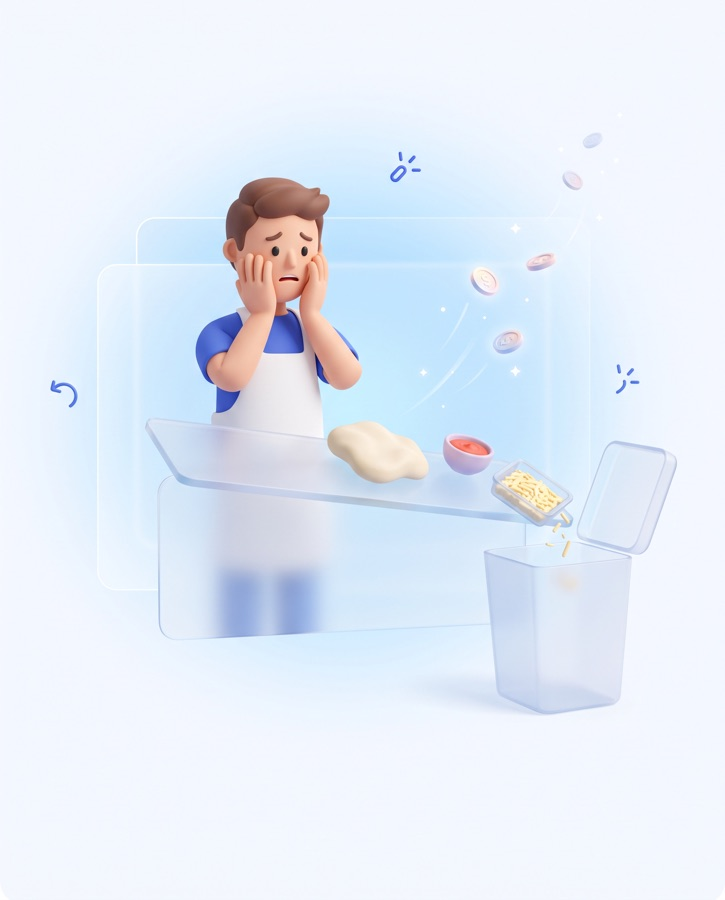
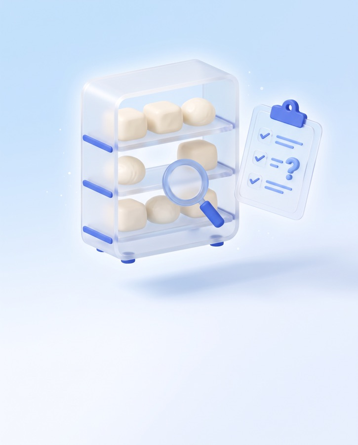
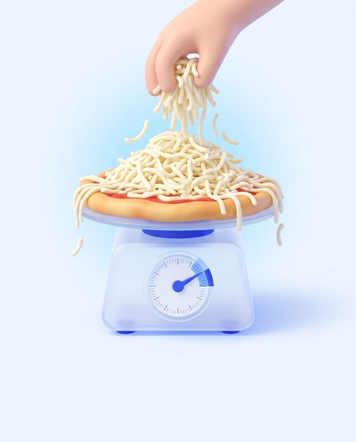
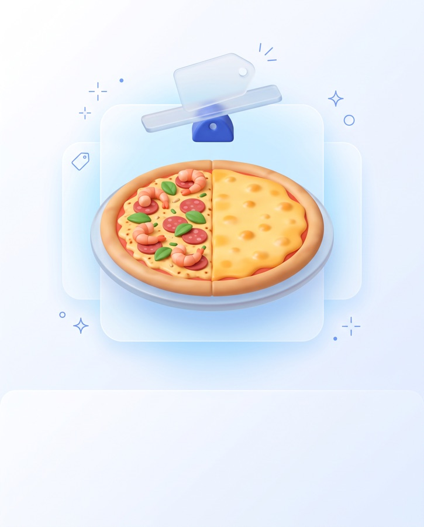
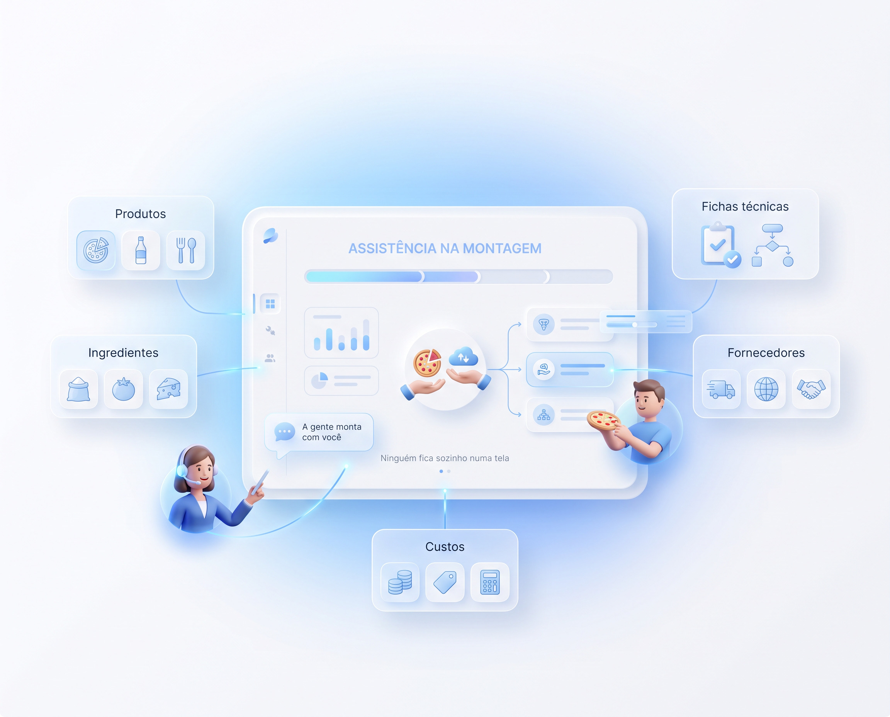
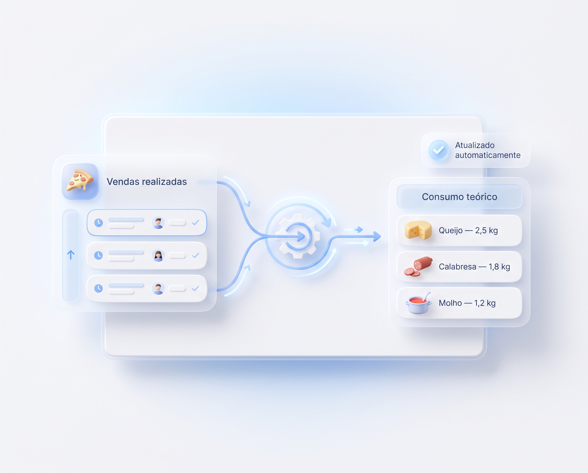
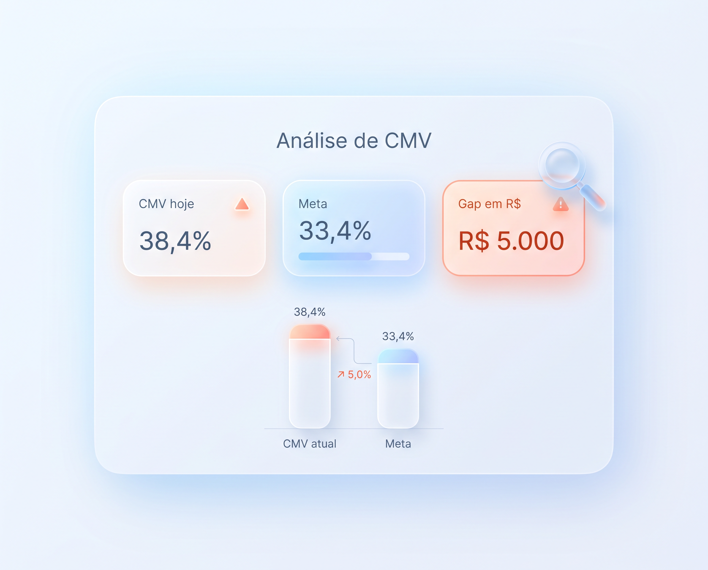
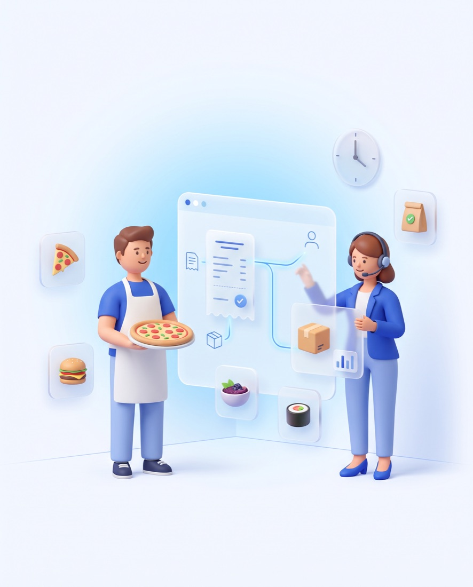

Suas vendas
agoraOntem saíram 128 pizzas no salão e delivery

A AbasteceAê cruza suas vendas com o estoque e mostra, todo dia, quanto dinheiro está escapando, onde e o que fazer. Você recupera margem sem vender uma pizza a mais.
Quero meu diagnóstico gratuito
acima do ideal já bastam para virar prejuízo
parados no estoque de quem fatura R$ 100 mil
que já eram seus. Só faltava enxergar.
é o prazo da sua análise gratuita de CMV
Você sabe quanto faturou ontem. Sabe quantas pizzas saíram. Mas quase nenhuma pizzaria sabe quanto de ingrediente deveria ter saído para fazer essas pizzas, e quanto saiu de verdade.
Sem essa resposta, desperdício, furo de estoque, mão pesada e meio a meio mal cobrado viram prejuízo todo mês. E nunca aparece como perda. Aparece como lucro que não veio.


Massa, molho e queijo que vão para o lixo no fim da noite.
Ver na minha
A mussarela entrou, mas a contagem não fecha.
Ver na minha
220 g de queijo onde a ficha pede 180 g.
Ver na minha
Duas metades caras cobradas pelo preço da mais barata.
Ver na minhaNada disso aparece como perda. Aparece no fim do mês.
Ver na minhaO sistema compara o que as vendas dizem que saiu com o que realmente saiu do estoque.
Ontem saíram 128 pizzas no salão e delivery
Margherita 180 g de mussarela por unidade
Conexão com as vendas chegando sozinhas, sem planilha
Contagem de segunda-feira registrada
Mussarela atualizada para R$ 32,00/kg
Calculado: 22,4 kg de mussarela deveriam ter saído
Contado: 30 kg na câmara hoje de manhã
Achamos 12 kg que não passaram por venda
Fechou em 38,4%, cinco pontos acima do ideal
Isso vale R$ 5.000 por mês na sua operação
A diferença entre os dois é o seu dinheiro. Agora visível, todo dia.
Não é mais um relatório para ler. É saber, todo dia, onde está o seu dinheiro e o que fazer com ele.
Ache os pontos de CMV que escapam e transforme em lucro. Em quem fatura R$ 100 mil, são até R$ 5.000 por mês.
Saiba quanto tem de cada insumo e quanto vai precisar. Menos compra de emergência, menos produto vencendo.
Veja o custo real de cada pizza, inclusive do meio a meio, e ajuste o cardápio onde a margem some.
Compare a ficha técnica com o consumo real e ache a mão pesada antes que ela vire hábito.

Na implantação assistida, nossa equipe cadastra junto seus produtos, ingredientes, fichas técnicas, fornecedores e custos. Ninguém fica sozinho numa tela.

O sistema lê suas vendas e transforma em consumo teórico sozinho. Nenhuma planilha no meio.

Todo dia: o CMV real, onde está escapando e quanto isso vale em reais. A decisão fica óbvia.
Texto ou áudio, na mesma tela onde você já resolve o resto do dia. Sem abrir sistema, sem relatório, sem esperar.
A tecnologia por trás é complicada. O que chega para você é a resposta certa, na hora certa.
Quero meu diagnóstico gratuitoAbasteceAê
online
Quanto tenho de mussarela?21:14
12,4 kg em estoque agora. Dá para mais ou menos 78 pizzas no seu mix atual.21:14
Quanto consumi de calabresa ontem?21:15
Ontem saíram 6,8 kg. Pelas vendas, deveriam ter saído 6,0 kg.
Sobrou 13% de consumo sem venda.21:15
Você passa alguns números da operação: faturamento médio, pizzas vendidas, principais insumos e custos, estoque atual. A gente devolve:
calculado com as suas fichas e as suas vendas
o retrato da sua operação, sem achismo
o número que transforma planilha em decisão
Exemplo de uma pizzaria que fatura R$ 100 mil por mês:
Em 12 meses, isso vira
R$ 60.000
Dinheiro que já era seu, parado no estoque. O diagnóstico gratuito mostra quanto disso acontece na sua pizzaria.
Dono de restaurante é especialista em fazer comida boa e atender bem. Não em cruzar venda com estoque numa planilha às 23h. Esse trabalho a gente assume.
Somos especializados em operação que gira muito insumo: pizzaria, hamburgueria, açaí, sushi e delivery de alto volume. É onde o desperdício se esconde melhor.

Você usa o sistema completo por 14 dias. Nesse período, nossa equipe cadastra com você produtos, fichas técnicas, fornecedores, custos e a integração com as vendas.
Quando o teste acaba, você não tem um sistema para configurar. Você tem a sua operação rodando dentro dele.Começar meu teste de 14 dias
Restaurante conversa com restaurante. A gente recompensa isso.
Indique um restaurante que feche com a gente
1 mês grátis
Indique três que fechem com a gente
3 meses grátis
Não. A gente monta junto na implantação.
O foco é pizzaria, mas funciona em hamburgueria, açaí, sushi, delivery de alto volume e restaurante de pequeno e médio porte. Qualquer operação que gire muito insumo.
As respostas chegam no WhatsApp. Se você usa WhatsApp, você usa a AbasteceAê.
Melhor ainda: o diagnóstico te dá essa certeza. Mas, na prática, quase toda operação tem vazamento que não aparece no caixa.
Comece pelo diagnóstico gratuito. Sem compromisso, sem instalação. Só os seus números dizendo a verdade.